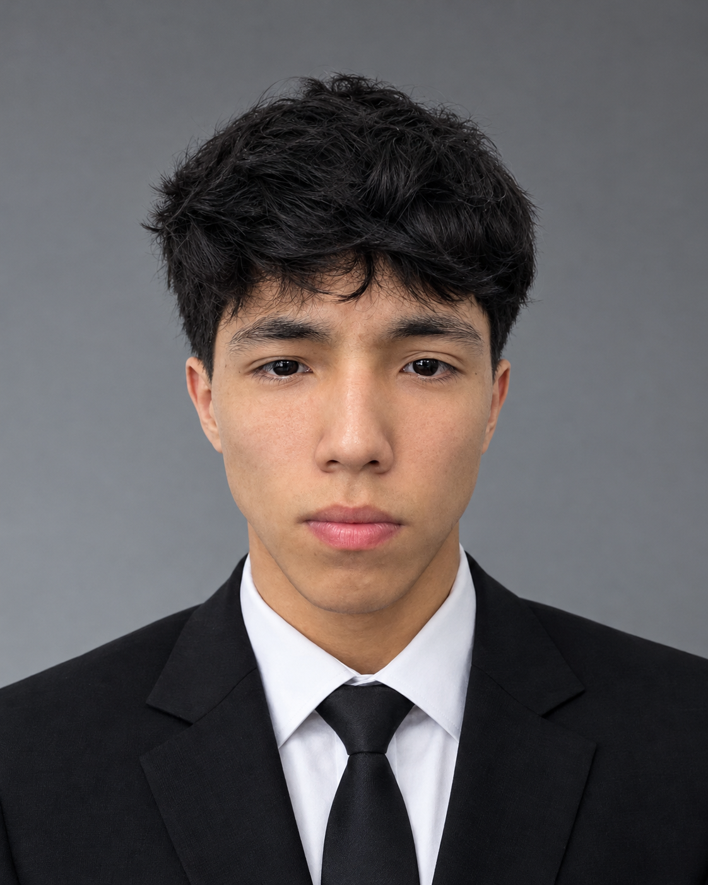

2023 — NOW
Higher College APEC Petrotechnic
Fourth-year student in the Information Systems Technician programme, combining college studies with practical software, web, and IT projects.
IT STUDENT · WEB & CYBERSECURITY— ATYRAU, KZ
I’m Farhad — an IT student who learns by building. I turn ideas into usable websites, practical tools, and cybersecurity learning experiences.

A quick introduction to the person behind the projects — what I’m learning, what I care about, and how I approach a problem.
I like the space where curiosity becomes something useful. I break big ideas into small steps, test them, and keep improving until they work for real people.
I’m a fourth-year student at Higher College APEC Petrotechnic in Atyrau, Kazakhstan, studying Information Systems Technician. Alongside college, I’ve gained internship experience at TCO and KTR and keep learning through hands-on work.
My projects span web interfaces, IT support utilities, network diagnostics, and cybersecurity awareness. I enjoy learning the reasoning behind a system just as much as building the visible parts of it.
A mix of deployed websites, interactive cybersecurity concepts, and hands-on IT labs. Demo and local projects are labelled clearly.
A practical snapshot, not inflated percentages. I focus on what I can explain, demonstrate, and keep improving.
I prefer to show what I can do through working examples. Skills marked as learning are areas I’m actively strengthening.
This list should stay honest and grow alongside real projects.
My education, internship experience, and project work — a foundation I’m continuing to build on.
Fourth-year student in the Information Systems Technician programme, combining college studies with practical software, web, and IT projects.
Completed an internship at TCO in Atyrau, gaining experience in a professional industry environment.
Completed an internship at KTR in Atyrau as part of my professional learning path.
Developing a bilingual phishing-awareness concept with simulated training scenarios and a demo management dashboard.
Good technology should make complicated things feel a little more human.
I’m open to IT internships, junior opportunities, collaborative projects, and conversations with people who like solving problems.